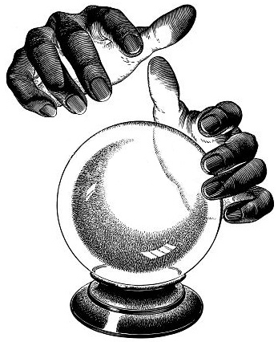

PROJET
"Il ne faut jamais faire de projets, surtout en ce qui concerne l’avenir." Alphonse ALLAIS
Remémorez-vous petits, comment vous imaginiez faire de grandes choses et aviez une ambition exacerbée, pleins de projets. Aujourd'hui, où en êtes-vous ? Avez-vous entrepris comme vous le projetiez ou êtes- vous resté à ce stade projectif infantile ? Passez-vous régulièrement à l'action ou vous sentez-vous sans cesse freiné ?
Vous avez pris conscience que la volonté ne suffit pas dans la réalisation d'un projet. Il faut agir et pour cela, vous devez vous libérer des pensées négatives, écouter vos rêves et, surtout, accepter de vous poser en individu responsable de votre destin.
Je ne vous apprends pas que le temps coule avec sa composante anxiogène lorsqu'on l'observe passivement filé. Dans cette passivité d'action, certains individus sont inhibés depuis si longtemps qu’ils ne savent plus comment s’y prendre. Pour remédier à cette latence, il s’agit par conséquent d’apprendre à débloquer les pensées négatives et explorer les peurs qui maintiennent dans l'inertie et la passivité.
Agir pour la réalisation d'un projet, c'est marquer des choix en prenant des décisions. Lorsque vous prenez une décision, vos croyances limitantes vous influencent. Au lieu de vous focaliser sur vos objectifs, une petite voix vous murmure que vous n’allez pas y arriver. Pire, votre esprit se distrait facilement et vous pousse à procrastiner. Vous êtes, sans doute, victime de vos propres croyances limitatives qui sont ces convictions personnelles, souvent non justifiées et qui font office de repères dans la vie de tous les jours. Elles déterminent ce que vous pouvez faire ou pas. Elles servent de valeur de jugement. Concrètement, votre système de croyances détermine la direction et la qualité de votre vie : professionnelle, personnelle, relationnelle…
Vous êtes-vous déjà questionné sur ce répertoire de croyances limitantes ?
Vous avez pris conscience que la volonté ne suffit pas dans la réalisation d'un projet. Il faut agir et pour cela, vous devez vous libérer des pensées négatives, écouter vos rêves et, surtout, accepter de vous poser en individu responsable de votre destin.
Je ne vous apprends pas que le temps coule avec sa composante anxiogène lorsqu'on l'observe passivement filé. Dans cette passivité d'action, certains individus sont inhibés depuis si longtemps qu’ils ne savent plus comment s’y prendre. Pour remédier à cette latence, il s’agit par conséquent d’apprendre à débloquer les pensées négatives et explorer les peurs qui maintiennent dans l'inertie et la passivité.
Agir pour la réalisation d'un projet, c'est marquer des choix en prenant des décisions. Lorsque vous prenez une décision, vos croyances limitantes vous influencent. Au lieu de vous focaliser sur vos objectifs, une petite voix vous murmure que vous n’allez pas y arriver. Pire, votre esprit se distrait facilement et vous pousse à procrastiner. Vous êtes, sans doute, victime de vos propres croyances limitatives qui sont ces convictions personnelles, souvent non justifiées et qui font office de repères dans la vie de tous les jours. Elles déterminent ce que vous pouvez faire ou pas. Elles servent de valeur de jugement. Concrètement, votre système de croyances détermine la direction et la qualité de votre vie : professionnelle, personnelle, relationnelle…
Vous êtes-vous déjà questionné sur ce répertoire de croyances limitantes ?

Puis il y a la peur de passer à l’action car perçue comme une prise de risque et une sortie de zone de confort. Dans cette zone de confort, qui est propre à tout un chacun, il est difficile d’apprendre, de découvrir, d’expérimenter, de rencontrer, de goûter, en d’autres termes de vivre pleinement et de s’épanouir.
Pourtant, quitter cette zone de confort peut alors avoir de nombreux effets positifs insoupçonnés. C’est simple, dans la zone de confort les changements que l’on espère ne risquent pas d’arriver. En effet, si vous ne changez rien à votre vie, rien ne changera. Si vous sentez une lassitude ou une certaine monotonie qui rend votre routine pénible, je vous invite fortement à songer à quitter votre zone de confort.
Et si vous acceptiez de progresser dans un cheminement qui se composerait de doute, d'incertitude, de perte de contrôle, d'imperfection, d'obstacle et d'échec possible, ça serait comment ?
S’accomplir, c’est regarder vers l’avenir. C’est grâce à vos projets que votre futur n'est pas une répétition du passé.
L'hypnose peut vous accompagner dans l'interrogation de vos peurs, vos désirs, vos besoins et ainsi répondre à la réalisation de vos projets les plus ambitieux. Sous hypnose, le temps devient relatif. Vous vivez vos projets et pouvez ramener comme un souvenir du futur au présent.
Pourtant, quitter cette zone de confort peut alors avoir de nombreux effets positifs insoupçonnés. C’est simple, dans la zone de confort les changements que l’on espère ne risquent pas d’arriver. En effet, si vous ne changez rien à votre vie, rien ne changera. Si vous sentez une lassitude ou une certaine monotonie qui rend votre routine pénible, je vous invite fortement à songer à quitter votre zone de confort.
Et si vous acceptiez de progresser dans un cheminement qui se composerait de doute, d'incertitude, de perte de contrôle, d'imperfection, d'obstacle et d'échec possible, ça serait comment ?
S’accomplir, c’est regarder vers l’avenir. C’est grâce à vos projets que votre futur n'est pas une répétition du passé.
L'hypnose peut vous accompagner dans l'interrogation de vos peurs, vos désirs, vos besoins et ainsi répondre à la réalisation de vos projets les plus ambitieux. Sous hypnose, le temps devient relatif. Vous vivez vos projets et pouvez ramener comme un souvenir du futur au présent.
EN RELATION

(NON) CHOIX
CONFIANCE


AFFIRMATION
VISION
(in) CONFORT
CREATIVITE
MODELE
CAP